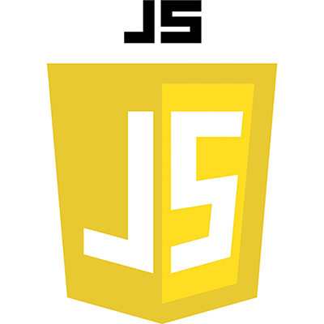
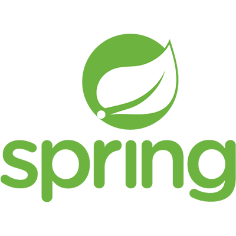

CONTACT
SKILLS


- 

- 
EDUCATION
호서대학교 - 노인복지학 전공 (2012-2015 중퇴)
경성고등학교 (2009-2011)
호서대학교 - 노인복지학 전공 (2012-2015 중퇴)
경성고등학교 (2009-2011)
🤼♂️ 앞으로 협업과 소통이 원활한 개발자, 🔨문제를 해결하는 개발자가 되고 싶습니다.
가장 기본적인 것이면서도 가장 어려운 점이라고 생각합니다.
더욱 더 학습에 매진하여 지식을 쌓고 프로젝트 경험을 통해 성장하고 싶습니다.